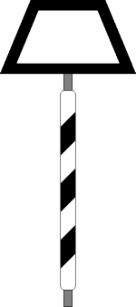
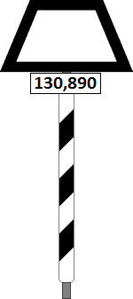

(1)
Bedeutung
Kennzeichnung der Stelle, wo bestimmte Züge vor einer Betriebsstelle zu halten haben.
›
Signalbuch-Online
Kennzeichnung der Stelle, wo bestimmte Züge vor einer Betriebsstelle zu halten haben.

